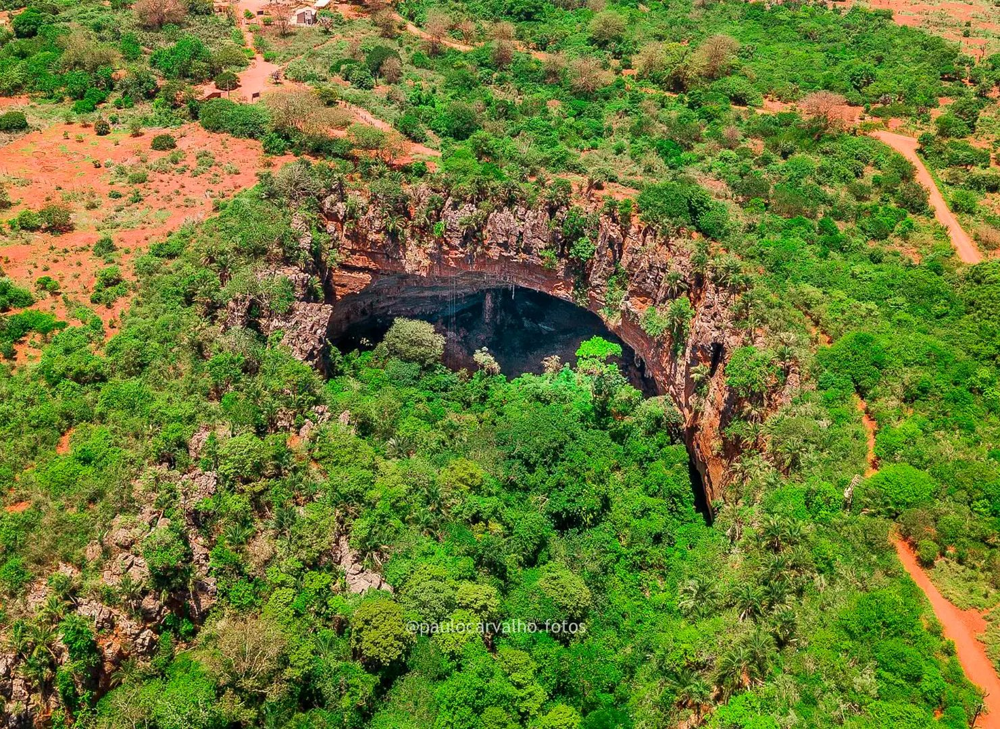
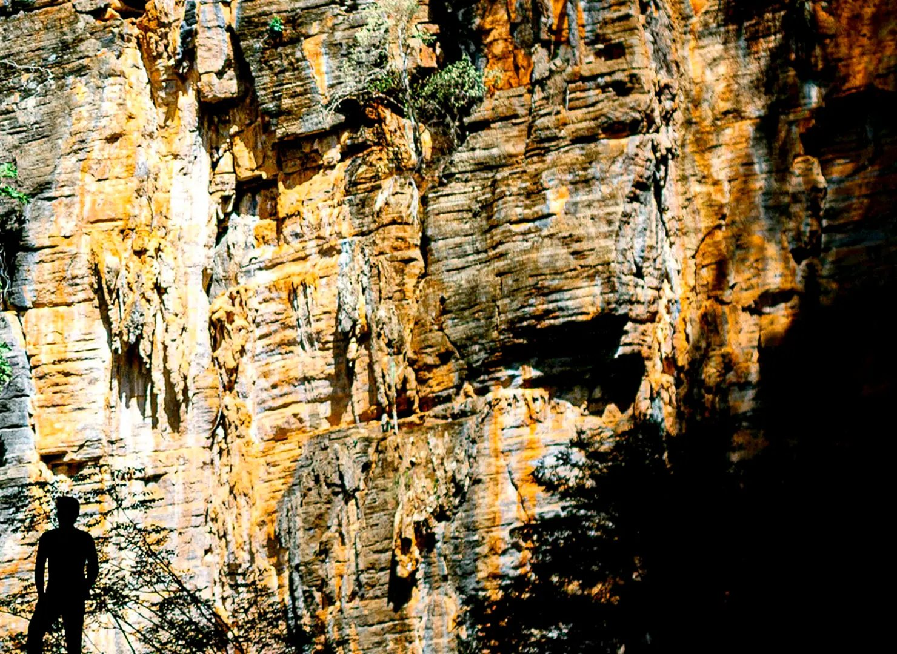
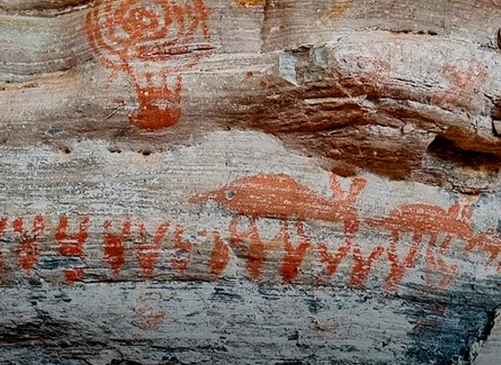
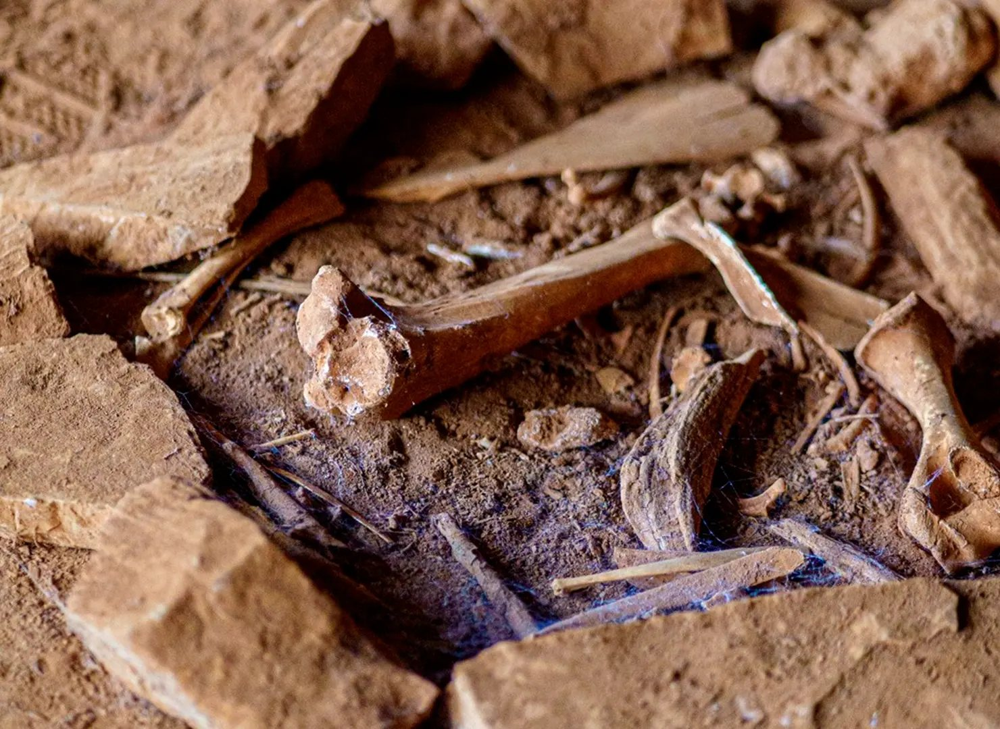
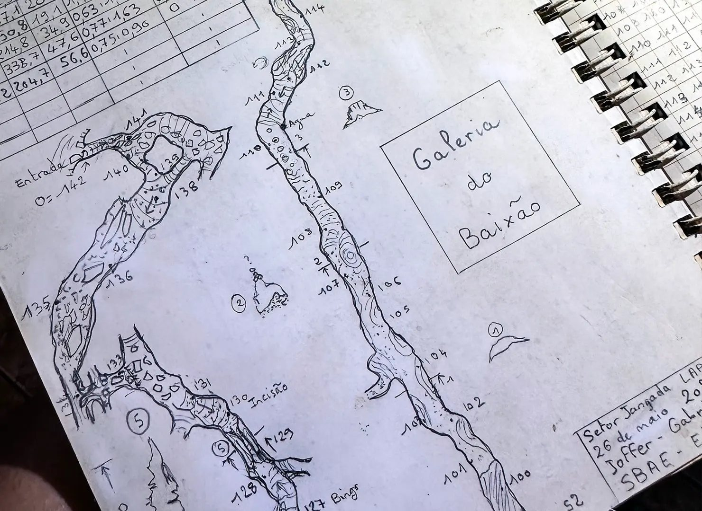

Gruta da Lapa Doce
- Posicionamento
- Conceito
- Tom de voz
- Copy de site

Ponto de partida
A Gruta da Lapa Doce já era um lugar com história e um atrativo de peso na Chapada Diamantina. Mesmo assim, perdia espaço para destinos menos impressionantes, mas que se comunicavam melhor.
Ideia conceito
A segunda maior caverna do Brasil. O primeiro lugar que você deve visitar na Chapada.
Como a ideia foi construída
Se o lugar já era bom, o problema não estava na caverna. Estava na forma de contar. O caminho foi trabalhar a experiência e mostrar a Gruta como ela é: um lugar surreal, desses que você não conhece até ver e, depois que vê, passa a procurar.
A frase conceito abre com o fato, que dá credencial: a segunda maior caverna do Brasil. E fecha com a direção, que coloca a Gruta no topo da viagem: o primeiro lugar que você deve visitar.
O texto do site segue a mesma linha. Menos folheto de turismo, mais vontade de ir.
O lugar





O que fiz
- Releitura do posicionamento da marca.
- Construção do conceito e da linguagem central.
- Definição do tom de voz.
- Direção criativa e copy do site.
- Criação de uma base verbal capaz de orientar outros conteúdos da marca.
Próximo projeto
Raízes em Flor